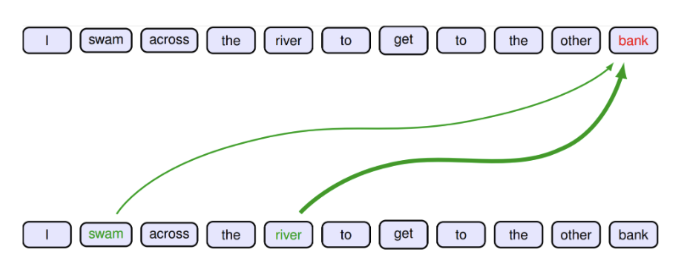
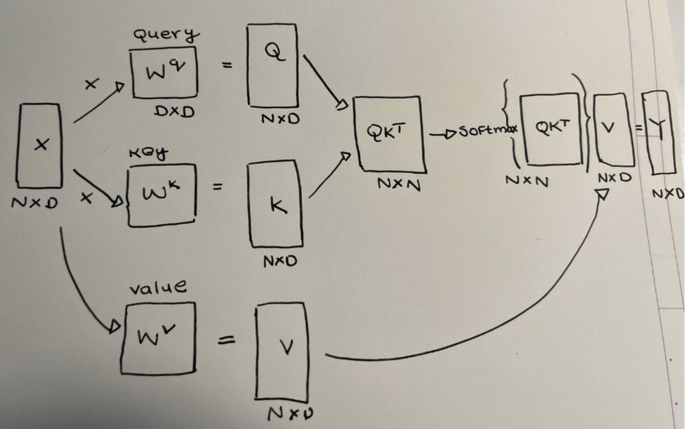
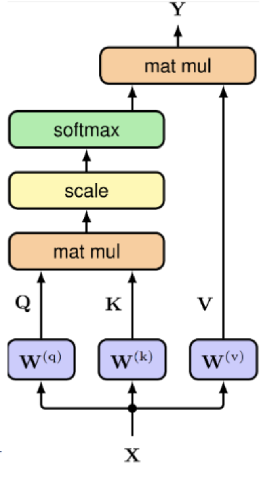
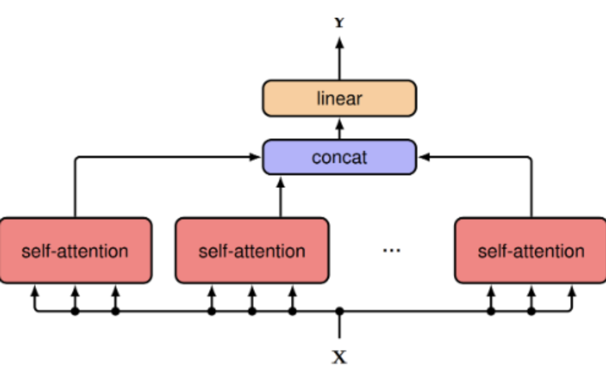
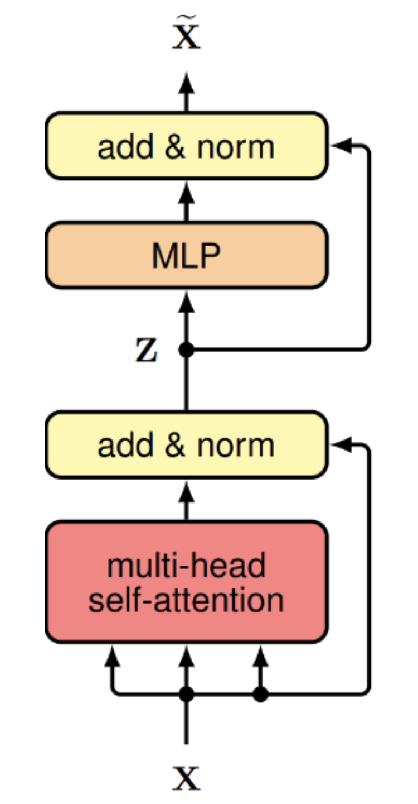
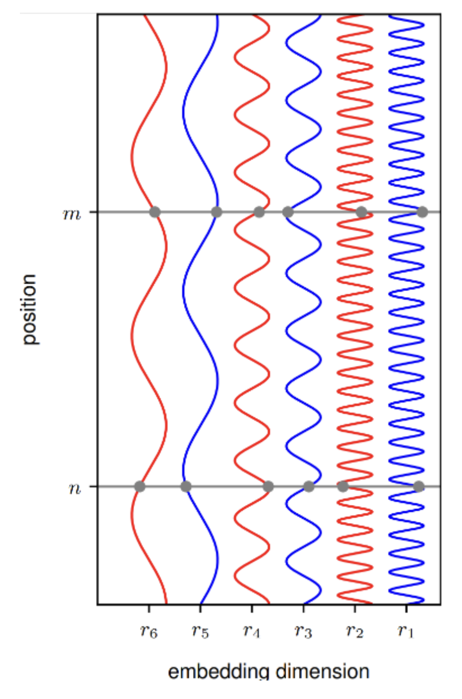

Transformers 101 #
A transformer has 3 main components.
- Multi-head scaled self-attention.
- MLP with residual connections and layer normalization.
- Positional encodings.
TLDR #
| Transformer | Description |
|---|---|
| \(\mathbf{X}\) | embedding matrix |
| \(\mathbf{X} = \mathbf{X} + \mathbf{R}\) | position encoding matrix |
| \(\mathbf{Y} = \text{TransformerLayer}[\mathbf{X}]\) | transformer |
| \(\mathbf{Y} = \text{SoftMax}[\mathbf{X}\mathbf{X}^{T}] \mathbf{X}\) | dot-product self-attention |
| \(\mathbf{Y} = \text{SoftMax}[\mathbf{X} \mathbf{W}^{q}\mathbf{W}^{kT}\mathbf{X}^{T}] \mathbf{X} \mathbf{W}^{v}\) | Query, Key, Value matrices |
| \(\mathbf{Y} = \text{SoftMax}[\mathbf{Q}\mathbf{K}^{T}] \mathbf{V} \) | Query, Key, Value matrices |
| \(\mathbf{Y} = \text{SoftMax}[\frac{\mathbf{Q}\mathbf{K}^{T}}{\sqrt{D}}] \mathbf{V} \) | Scaled dot-product self attention |
| \(\mathbf{Y} = \text{Concat}[\mathbf{H}_1,...,\mathbf{H}_H]\mathbf{W}^o \) where \(\mathbf{H}_h = \text{SoftMax}\left[\frac{\mathbf{Q_h}\mathbf{K_h}^{T}}{\sqrt{D_k}}\right] \mathbf{V_h}\) | Multi-head attention |
| \(\mathbf{Z} = \text{LayerNorm}\left[\mathbf{Y}(\mathbf{X})+\mathbf{X}\right]\) | layer normalization and residual connection |
| \(\mathbf{X^*} = \text{LayerNorm}\left[\text{MLP}(\mathbf{Z})+\mathbf{Z}\right]\) | MLP layer |
| Parameter | Count | Description |
|---|---|---|
| \(\mathbf{E}\) | \(VD\) | The token embedding matrix. \(V\) is the size of the vocabulary and \(D\) is the dimensions of the embeddings. |
| \(\mathbf{W}^q_h\) \(\mathbf{W}^k_h\) \(\mathbf{W}^v_h\) | \(3HD^2\) | The query, key and the value matrices each of dimension \(D \times D \) for the \(H\) heads. |
| \(\mathbf{W}^o\) | \(HD^2\) | The output matrix of dimension \(HD \times D \) . |
| \(\mathbf{W}^{ff}_{1}\) \(\mathbf{W}^{ff}_{2}\) | \(2DD_{ff}\) | The parameters of the two-layer MLP. |
| \(8D^2\) | Typically \(D_{ff} = 4 D\) | |
| \((4H+8)D^2\) total parameters |
Multi-head scaled self-attention. #
Tokens #
We will start with the concept of tokens. As token can be
- word
- sub-word
- image patch
- amino acid
- etc.
Token embeddings #
Let \(\mathbf{x}_n \in \mathbb{R}^D\) be a column vector of \(D\) features corresponding to a token \(n\) .
This corresponds to the \(D\) -dimensional embedding vector of the token.
Embedding matrix #
We can stack all the embedding vectors \(\left\{\mathbf{x}_n\right\}_{n=1}^{N}\) for a sequence of \(N\) tokens as rows into an embedding matrix \(\mathbf{X}\) .
\[\mathbf{X}_{\text{N (tokens)} \times \text{D (features)}}\]Transformer layer #
A transformer transforms the embedding matrix \(\mathbf{X}\) to another matrix \(\mathbf{Y}\) of the same dimension.
\[ \mathbf{Y}_{N \times D} = \text{TransformerLayer}[\mathbf{X}_{N \times D}] \]The goal of transformation is that the new space \(\mathbf{Y}\) will have a richer internal representation that is better suited to solve downstream tasks.
The embeddings are trained to capture elementary semantic properties, words with similar meaning should map to nearby locations in the embedding space.
A transformer can be viewed as a richer form of embedding in which the embedding vector for a token is mapped to a location that depends on the embedding vectors of other tokens in the sequence.
- I swam across the river to get to the other bank. (bank~water)
- I walked across the road to get cash from the bank. (bank~money)
Attention #
We do this via the notion of attention.
To determine the appropriate interpretation of the token bank the transformer processing a sentence should attend to (or give more importance to) specific words from the rest of the sequence.
Originally developed by Bahdanau, Cho, and Bengio, 2015 1 as an enhancement to RNNs for machine translation. Vaswani et al, 2017 2 later completely eliminated the recurrence structure and instead focussed only on the attention mechanism.
We will do this via the notion of attention where we generate the output transformed vector \(\mathbf{y}_n\) via a linear combination of all the input vectors, that is, by attending to all the input vectors.
\[ \mathbf{y}_n = \sum_{m=1}^{N} a_{nm} \mathbf{x}_m \]\(a_{nm}\) are called attention weights/coefficients.
The attention coefficients should satisfy the following two properties.
- \(a_{nm} \geq 0\)
- \(\sum_{m=1}^N a_{nm} =1\)
Partition of unity ( \(0 \leq a_{nm} \leq 1\) ).
Self-attention #
We want to capture the notion of how similar a token is to other tokens.
This can be done via a dot product between the query vector ( \(\mathbf{x}_{n}\) ) and the key vector ( \(\mathbf{x}_{m}\) ).
\[ a_{nm} \propto (\mathbf{x}_{n}^T\mathbf{x}_m) \]The attention coefficients should satisfy the following two properties.
- \(a_{nm} \geq 0\)
- \(\sum_{m=1}^N a_{nm} =1\)
This can be achieved by a soft-max of the dot products.
\[ a_{nm} = \text{SoftMax}(\mathbf{x}_{n}^T\mathbf{x}_m) = \frac{\exp(\mathbf{x}_{n}^T\mathbf{x}_m)}{\sum_{m'=1}^{N} \exp(\mathbf{x}_{n}^T\mathbf{x}_m')} \] \[ \mathbf{y}_n = \sum_{m=1}^{N} \text{SoftMax}(\mathbf{x}_{n}^T\mathbf{x}_m) \mathbf{x}_m \]Query, Key, Value #
A bit of terminology taken from the IR literature.
- Query The search query that the user types on a search engine.
- Key The feature representation of each document.
- Value The actual document.
The query is attending to a particular value whose key closely matches the query (hard attention). \[ \mathbf{y}_n = \sum_{m=1}^{N} \text{SoftMax}(\mathbf{x}_{n}^T\mathbf{x}_m) \mathbf{x}_m \]
- \(\mathbf{x}_{n}\) is the query.
- \(\mathbf{x}_m\) ( \(m=1,...N\) ) are the keys.
- \(\mathbf{x}_m\) ( \(m=1,...N\) ) are the values.
Dot-product self-attention #
So we now have the first definition of the transformer layer.
\[ \mathbf{Y}_{N \times D} = \text{TransformerLayer}[\mathbf{X}_{N \times D}] \] \[\mathbf{Y} = \text{SoftMax}[\mathbf{X}\mathbf{X}^{T}] \mathbf{X}\] \[\mathbf{Y}_{N \times D} = \text{SoftMax}[\mathbf{X}_{N \times D} \mathbf{X}^{T}_{D \times N} ] \mathbf{X}_{N \times D} \]Other than the embedding matrix this has no no learnable parameters yet.
| Parameter | Count | Description |
|---|---|---|
| \(\mathbf{E}\) | \(VD\) | The token embedding matrix. \(V\) is the size of the vocabulary and \(D\) is the dimensions of the mebeddings. |
\(\mathcal{O}(2N^2D)\) computations.
Network parameters #
The above has no learnable parameters.
Each feature value \(x_{ni}\) is equally important in the dot product.
We will introduce a \(D \times D\) matrix \(\mathbf{U}\) of learnable weights.
\[\mathbf{X^{*}}_{N \times D}=\mathbf{X}_{N \times D}\mathbf{U}_{D \times D}\]With this we have the second iteration of the transformer layer.
\[\mathbf{Y} = \text{SoftMax}[\mathbf{X}\mathbf{U}\mathbf{U}^{T}\mathbf{X}^{T}] \mathbf{X}\mathbf{U}\]We now have \(D^2\) learnable parameters. \(\mathcal{O}(2N^2D+ND^2)\) computations
While this has more flexibility the matrix \(\mathbf{X}\mathbf{U}\mathbf{U}^{T}\mathbf{X}^{T}\) is symmetric, whereas we would like the attention matrix to support significant asymmetry.
- The word chisel should be strongly associated with tool since every chisel is a tool.
- The word tool should be weakly associated with the word chisel since there are many other kinds of tools besides chisel.
Query, Key, Value matrices #
To overcome these limitations, we introduce separate Query, Key, Value matrices each having their own independent linear transformations.
\[\mathbf{Q} = \mathbf{X} \mathbf{W}^{q}\] \[\mathbf{K} = \mathbf{X} \mathbf{W}^{k}\] \[\mathbf{V} = \mathbf{X} \mathbf{W}^{v}\]
Let’s check the dimensions.
\[\mathbf{Q}_{N \times D_q} = \mathbf{X}_{N \times D} \mathbf{W}^{q}_{D \times D_q}\] \[\mathbf{K}_{N \times D_k} = \mathbf{X}_{N \times D} \mathbf{W}^{k}_{D \times D_k}\] \[\mathbf{V}_{N \times D_v} = \mathbf{X}_{N \times D} \mathbf{W}^{v}_{D \times D_v}\]
Typically \(D_q=D_k\)
\[\mathbf{Q}_{N \times D_k} = \mathbf{X}_{N \times D} \mathbf{W}^{q}_{D \times D_k}\] \[\mathbf{K}_{N \times D_k} = \mathbf{X}_{N \times D} \mathbf{W}^{k}_{D \times D_k}\] \[\mathbf{V}_{N \times D_v} = \mathbf{X}_{N \times D} \mathbf{W}^{v}_{D \times D_v}\]
With this we have the third iteration of the transformer layer.
\[\mathbf{Y} = \text{SoftMax}[\mathbf{Q}\mathbf{K}^{T}] \mathbf{V}\]Let’s check the dimensions once.
\[\mathbf{Y}_{N \times D_v} = \text{SoftMax}[\mathbf{Q}_{N \times D_k}\mathbf{K}^{T}_{D_k \times N}] \mathbf{V}_{N \times D_v}\]A common choice is \(D_k=D_v=D\) . This also makes the output dimension same as the input and helps later to add residual connections.
\[\mathbf{Y}_{N \times D} = \text{SoftMax}[\mathbf{Q}_{N \times D}\mathbf{K}^{T}_{D \times N}] \mathbf{V}_{N \times D}\]We now have \(3D^2\) learnable parameters.
| Parameter | Count | Description |
|---|---|---|
| \(\mathbf{E}\) | \(VD\) | The token embedding matrix. \(V\) is the size of the vocabulary and \(D\) is the dimensions of the embeddings. |
| \(\mathbf{W}^q\) \(\mathbf{W}^k\) \(\mathbf{W}^v\) | \(3D^2\) | The query, key and the value matrices each of dimension \(D \times D\) |
\(\mathcal{O}(2N^2D+3ND^2)\) computations
Recap #
| Transformer | Description |
|---|---|
| \(\mathbf{Y} = \text{TransformerLayer}[\mathbf{X}]\) | transformer |
| \(\mathbf{Y} = \text{SoftMax}[\mathbf{X}\mathbf{X}^{T}] \mathbf{X}\) | dot-product self-attention |
| \(\mathbf{Y} = \text{SoftMax}[\mathbf{X}\mathbf{U}\mathbf{U}^{T}\mathbf{X}^{T}] \mathbf{X}\mathbf{U}\) | learnable parameters |
| \(\mathbf{Y} = \text{SoftMax}[\mathbf{X} \mathbf{W}^{q}\mathbf{W}^{kT}\mathbf{X}^{T}] \mathbf{X} \mathbf{W}^{v}\) | Query, Key, Value matrices |
| \(\mathbf{Y} = \text{SoftMax}[\mathbf{Q}\mathbf{K}^{T}] \mathbf{V} \) | Query, Key, Value matrices |
Scaled dot-product self-attention #
The gradients of the soft-max become exponentially small for inputs of high magnitude.
Hence we scale it as follows.
\[\mathbf{Y} = \text{SoftMax}\left[\frac{\mathbf{Q}\mathbf{K}^{T}}{\sqrt{D_k}}\right] \mathbf{V}\]\(D_k\) which is the variance of the dot-product.
If the elements of the query and key vectors were all independent random variables with zero mean and unit variance, then the variance of the dot product would be \(D_k\)
Single attention head #
This is known a s single attention head. \[\mathbf{Y} = \text{SoftMax}\left[\frac{\mathbf{Q}\mathbf{K}^{T}}{\sqrt{D_k}}\right] \mathbf{V}\]
Multi-head attention #
Capture multiple patterns of attention (for example, tense, vocabulary etc.).
Sort of similar to using multiple different filters in each layer of a convolutional neural network.
We have \(H\) attention heads indexed by \(h=1,...,H\) .
\[\mathbf{H}_h = \text{Attention}(\mathbf{Q_h},\mathbf{K_h},\mathbf{V_h}) = \text{SoftMax}\left[\frac{\mathbf{Q_h}\mathbf{K_h}^{T}}{\sqrt{D_k}}\right] \mathbf{V_h}\]\[\mathbf{Q}_h = \mathbf{X} \mathbf{W}^{q}_h\] \[\mathbf{K}_h = \mathbf{X} \mathbf{W}^{k}_h\] \[\mathbf{V}_h = \mathbf{X} \mathbf{W}^{v}_h\]
The output from each heads are first concatenated into a single matrix and then linearly transformed using another matrix.
\[\mathbf{Y}(\mathbf{X}) =\text{Concat}[\mathbf{H}_1,...,\mathbf{H}_H]\mathbf{W}^o\]Let’s check the dimensions
\[\mathbf{Y}_{N \times D} =\text{Concat}[\mathbf{H}_1,...,\mathbf{H}_H]_{N \times HD_v} \mathbf{W}^o_{HD_v \times D}\]Typically \(D_v = D/H\) .
We now have \(3HD^2\) learnable parameters.
| Parameter | Count | Description |
|---|---|---|
| \(\mathbf{E}\) | \(VD\) | The token embedding matrix. \(V\) is the size of the vocabulary and \(D\) is the dimensions of the embeddings. |
| \(\mathbf{W}^q_h\) \(\mathbf{W}^k_h\) \(\mathbf{W}^v_h\) | \(3HD^2\) | The query, key and the value matrices each of dimension \(D \times D \) for the \(H\) heads. |
| \(\mathbf{W}^o\) | \(HD^2\) | The output matrix of dimension \(HD \times D \) . |
\(\mathcal{O}(2HN^2D+4HND^2)\) computations
Recap #
| Transformer | Description |
|---|---|
| \(\mathbf{Y} = \text{TransformerLayer}[\mathbf{X}]\) | transformer |
| \(\mathbf{Y} = \text{SoftMax}[\mathbf{X}\mathbf{X}^{T}] \mathbf{X}\) | dot-product self-attention |
| \(\mathbf{Y} = \text{SoftMax}[\mathbf{X}\mathbf{U}\mathbf{U}^{T}\mathbf{X}^{T}] \mathbf{X}\mathbf{U}\) | learnable parameters |
| \(\mathbf{Y} = \text{SoftMax}[\mathbf{X} \mathbf{W}^{q}\mathbf{W}^{kT}\mathbf{X}^{T}] \mathbf{X} \mathbf{W}^{v}\) | Query, Key, Value matrices |
| \(\mathbf{Y} = \text{SoftMax}[\mathbf{Q}\mathbf{K}^{T}] \mathbf{V} \) | Query, Key, Value matrices |
| \(\mathbf{Y} = \text{SoftMax}[\frac{\mathbf{Q}\mathbf{K}^{T}}{\sqrt{D}}] \mathbf{V} \) | Scaled dot-product self attention |
| \(\mathbf{Y} = \text{Concat}[\mathbf{H}_1,...,\mathbf{H}_H]\mathbf{W}^o \) where \(\mathbf{H}_h = \text{SoftMax}\left[\frac{\mathbf{Q_h}\mathbf{K_h}^{T}}{\sqrt{D_k}}\right] \mathbf{V_h}\) | Multi-head attention |
MLP layers #
Residual connections #
To improve training efficiency we introduce residual connections that bypass the multi-head structure.
\[\mathbf{Y}(\mathbf{X}) = \text{TransformerLayer}[\mathbf{X}]\] \[\mathbf{Z} = \mathbf{Y}(\mathbf{X})+\mathbf{X}\]Layer normalization #
Layer normalization is then added also to improve training efficiency.
Layer Normalization, J. L. Bao, J. R. Kiros, and G. E. Hinton, 2016
Post-norm #
\[\mathbf{Z} = \text{LayerNorm}\left[\mathbf{Y}(\mathbf{X})+\mathbf{X}\right]\]Pre-norm #
\[\mathbf{Z} = \mathbf{Y}(\text{LayerNorm}\left[\mathbf{X}\right])+\mathbf{X}\]Pre-norm is most widely used these days while the original paper used post-norm.
On Layer Normalization in the Transformer Architecture, Ruibin Xiong, Yunchang Yang, Di He, Kai Zheng, Shuxin Zheng, Chen Xing, Huishuai Zhang, Yanyan Lan, Liwei Wang, Tie-Yan Liu, ICML 2020.
MLP layer #
We further add a MLP layer, for example, a two layer fully connected network with ReLU hidden units (typically bias is excluded).
\[\mathbf{X^*} = \text{MLP}(\mathbf{Z})=\text{R/GeLU}(\mathbf{Z}\mathbf{W}^{ff}_{1})\mathbf{W}^{ff}_2\]Let’s check the dimensions.
\[\mathbf{X^*} = \text{R/GeLU}(\mathbf{Z}_{N\times D}{\mathbf{W}^{ff1}_{1}}_{D \times D_{ff}}){\mathbf{W}^{ff}_{2}}_{D_{ff} \times D}\]Typically \(D_{ff} = 4 D\)
Residual connection again #
\[\mathbf{X^*} = \text{MLP}(\mathbf{Z})+\mathbf{Z}\]Layer normalization again #
\[\mathbf{X^*} = \text{LayerNorm}\left[\text{MLP}(\mathbf{Z})+\mathbf{Z}\right]\]We now have \(2DD_{ff}\) learnable parameters.
| Parameter | Count | Description |
|---|---|---|
| \(\mathbf{E}\) | \(VD\) | The token embedding matrix. \(V\) is the size of the vocabulary and \(D\) is the dimensions of the embeddings. |
| \(\mathbf{W}^q_h\) \(\mathbf{W}^k_h\) \(\mathbf{W}^v_h\) | \(3HD^2\) | The query, key and the value matrices each of dimension \(D \times D \) for the \(H\) heads. |
| \(\mathbf{W}^o\) | \(HD^2\) | The output matrix of dimension \(HD \times D \) . |
| \(\mathbf{W}^{ff}_{1}\) \(\mathbf{W}^{ff}_{2}\) | \(2DD_{ff}\) | The parameters of the two-layer MLP. |
| \(8D^2\) | Typically \(D_{ff} = 4 D\) |
\(\mathcal{O}(2HN^2D+4HND^2+2NDD_{ff})\) computations
\(\mathcal{O}(2HN^2D+4HND^2+8ND^2)\) computations
Recap #
| Transformer | Description |
|---|---|
| \(\mathbf{Y} = \text{TransformerLayer}[\mathbf{X}]\) | transformer |
| \(\mathbf{Y} = \text{SoftMax}[\mathbf{X}\mathbf{X}^{T}] \mathbf{X}\) | dot-product self-attention |
| \(\mathbf{Y} = \text{SoftMax}[\mathbf{X} \mathbf{W}^{q}\mathbf{W}^{kT}\mathbf{X}^{T}] \mathbf{X} \mathbf{W}^{v}\) | Query, Key, Value matrices |
| \(\mathbf{Y} = \text{SoftMax}[\mathbf{Q}\mathbf{K}^{T}] \mathbf{V} \) | Query, Key, Value matrices |
| \(\mathbf{Y} = \text{SoftMax}[\frac{\mathbf{Q}\mathbf{K}^{T}}{\sqrt{D}}] \mathbf{V} \) | Scaled dot-product self attention |
| \(\mathbf{Y} = \text{Concat}[\mathbf{H}_1,...,\mathbf{H}_H]\mathbf{W}^o \) where \(\mathbf{H}_h = \text{SoftMax}\left[\frac{\mathbf{Q_h}\mathbf{K_h}^{T}}{\sqrt{D_k}}\right] \mathbf{V_h}\) | Multi-head attention |
| \(\mathbf{Z} = \text{LayerNorm}\left[\mathbf{Y}(\mathbf{X})+\mathbf{X}\right]\) | layer normalization and residual connection |
| \(\mathbf{X^*} = \text{LayerNorm}\left[\text{MLP}(\mathbf{Z})+\mathbf{Z}\right]\) | MLP layer |
Positional encodings #
A transformer is equivariant with respect to input permutation, that is, it does not depend on the order of the tokens.
- The food was bad, not good at all.
- The food was good, not bad at all.
We need to find a way to inject the token order information.
We add a position encoding vector ( \(\mathbf{r}_n\) ) to each token vector ( \(\mathbf{x}_n\) ).
\[\mathbf{x}_n^* = \mathbf{x}_n + \mathbf{r}_n\]We could associate an integer 1, 2, 3… with each position.
- Magnitude of the value may increase without bound and corrupt the embedding vector.
- Will not generalize well the new input sequences longer than the training data.
Desiderata (Dufter, Schmitt, and Schutze, 2021)
- Unique representation for each token.
- Should be bounded.
- Generalize to longer sequences.
- Compute relative position of tokens.
Sinusoidal functions #
For a given position \(n\) the position encoding vector has components \(\mathbf{r}_{ni}\) given by sinusoids of steadily increasing wavelengths.
\[\mathbf{r}_{ni} = \text{sin}\left(\frac{n}{L^{i/D}}\right) \text{if i is even}\] \[\mathbf{r}_{ni} = \text{cos}\left(\frac{n}{L^{(i-1)/D}}\right) \text{if i is odd}\]
Sort of binary representation of numbers.
RoPE #
https://arxiv.org/pdf/2104.09864
Summary #
| Transformer | Description |
|---|---|
| \(\mathbf{X}\) | embedding matrix |
| \(\mathbf{X} = \mathbf{X} + \mathbf{R}\) | position encoding matrix |
| \(\mathbf{Y} = \text{TransformerLayer}[\mathbf{X}]\) | transformer |
| \(\mathbf{Y} = \text{SoftMax}[\mathbf{X}\mathbf{X}^{T}] \mathbf{X}\) | dot-product self-attention |
| \(\mathbf{Y} = \text{SoftMax}[\mathbf{X} \mathbf{W}^{q}\mathbf{W}^{kT}\mathbf{X}^{T}] \mathbf{X} \mathbf{W}^{v}\) | Query, Key, Value matrices |
| \(\mathbf{Y} = \text{SoftMax}[\mathbf{Q}\mathbf{K}^{T}] \mathbf{V} \) | Query, Key, Value matrices |
| \(\mathbf{Y} = \text{SoftMax}[\frac{\mathbf{Q}\mathbf{K}^{T}}{\sqrt{D}}] \mathbf{V} \) | Scaled dot-product self attention |
| \(\mathbf{Y} = \text{Concat}[\mathbf{H}_1,...,\mathbf{H}_H]\mathbf{W}^o \) where \(\mathbf{H}_h = \text{SoftMax}\left[\frac{\mathbf{Q_h}\mathbf{K_h}^{T}}{\sqrt{D_k}}\right] \mathbf{V_h}\) | Multi-head attention |
| \(\mathbf{Z} = \text{LayerNorm}\left[\mathbf{Y}(\mathbf{X})+\mathbf{X}\right]\) | layer normalization and residual connection |
| \(\mathbf{X^*} = \text{LayerNorm}\left[\text{MLP}(\mathbf{Z})+\mathbf{Z}\right]\) | MLP layer |
Final model #
---
title: Transformer
---
stateDiagram-v2
direction BT
Input: Sequence of token ids
Output: Output layers
TE: Token Embedding
PE: Position Embedding
T1: Transformer layer
T2: Transformer layer
T3: ...
T4: Transformer layer
Add: Add
Dropout: Dropout
Norm: Norm
Input --> TE
Input --> PE
TE --> Add
PE --> Add
Add --> Dropout
Dropout --> T1
T1 --> T2
T2 --> T3
T3 --> T4
T4 --> Norm
Norm --> Output
---
title: Transformer layer (pre-norm variant)
---
stateDiagram-v2
direction BT
X: $$\mathbf{X}_{N \times D}$$
Y: $$\mathbf{X}^*_{N \times D}$$
MHSA: Multi-head self-attention (MHSA)
MLP: Multi-layer perceptron (MLP)
Norm1: Norm
Norm2: Norm
Dropout1: Dropout
Dropout2: Dropout
Add1: Add
Add2: Add
X --> Norm1
Norm1 --> MHSA
MHSA --> Dropout1
Dropout1 --> Add1
X --> Add1
Add1 --> Norm2
Norm2 --> MLP
MLP --> Dropout2
Dropout2 --> Add2
Add1 --> Add2
Add2 --> Y
note right of Add1 : $$Z = \text{MHSA}(\text{Norm}\left[\mathbf{X}\right])+\mathbf{X}$$
note right of Add2 : $$X^* = \text{MLP}(\text{Norm}\left[\mathbf{Z}\right])+\mathbf{Z}$$
References #
-
Neural Machine Translation by Jointly Learning to Align and Translate, D. Bahdanau, K. Cho, Y. Bengio, ICLR 2015. ↩︎
-
Attention Is All You Need, A. Vaswani, N. Shazeer, N. Parmar, J. Uszkoreit, L. Jones, A. N. Gomez, L. Kaiser, I. Polosukhin, NeurIPS 2017. ↩︎